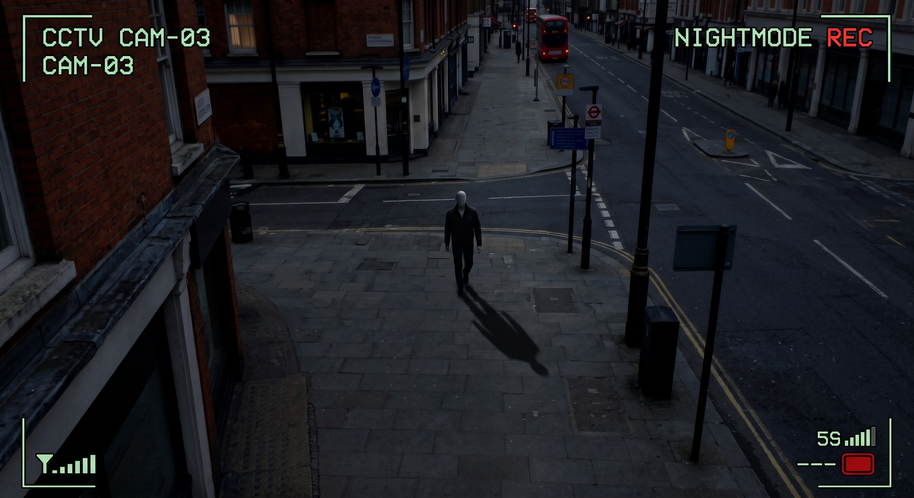

Manequins abandonam vitrines e são vistos andando pelas ruas de Londres
Funcionários encontraram vitrines vazias após o fechamento de lojas. Horas depois, figuras de plástico foram vistas caminhando pelo centro da cidade.

Comerciantes do centro de Londres acionaram a polícia após diversos manequins desaparecerem misteriosamente de vitrines durante a madrugada.
O caso ganhou proporções ainda mais estranhas quando câmeras de segurança registraram figuras semelhantes caminhando sozinhas pelas ruas poucos minutos depois.
Vitrines completamente vazias
Funcionários afirmam que nenhuma porta foi arrombada e que os alarmes das lojas não foram acionados durante os desaparecimentos.
Em algumas gravações, os manequins parecem se movimentar de maneira coordenada e seguir na mesma direção.
“Eu pensei que fosse uma pessoa fantasiada. Então percebi que ele nem tinha rosto.” — segurança de uma loja
A polícia isolou parte da região e pediu que moradores não se aproximem das figuras caso sejam encontradas. Especialistas também investigam relatos de interferências em objetos feitos de plástico.